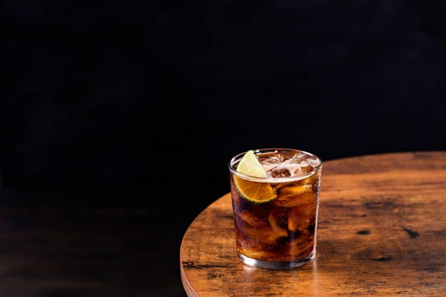

Liberations

Rum and Cola
An easy to make cocktail perfect for any occasion!
- Spiced Rum Sailor Jerry is Andy's choice
- Cola Pepsi Real Sugar is best
- Ice Cubes
- Add some ice in a high ball glass
- Measure one shot of rum (double shot if you're in the mood) and set aside
- Slowly pour six ounces of cola over the glass of ice while pouring the shot of rum
- Throw in a wedge of lime to create a "Cuba Libre"!